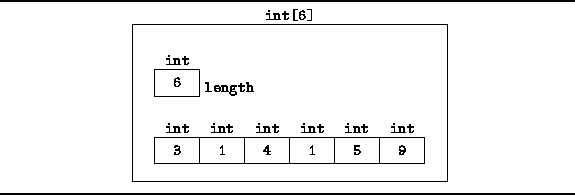
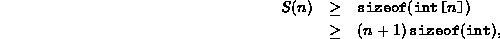

Data Structures and Algorithms
with Object-Oriented Design Patterns in Java
Data Structures and Algorithms
with Object-Oriented Design Patterns in JavaProbably the most common way to aggregate data is to use an array. In Java an array is an object that contains a collection of objects, all of the same type. For example,
int[] a = new int[5];allocates an array of five integers and assigns it to the variable a.
The elements of an array are accessed using integer-valued indices. In Java the first element of an array always has index zero. Thus, the five elements of array a are a[0], a[1], ..., a[4]. All array objects in Java have an int field called length, the value of which is equal to the number of array elements. In this case, a.length has the value 5.
Java checks at run-time that the index used in every array access is valid.
Valid indices fall between zero and  .
If an invalid index expression is used,
an IndexOutOfBoundsException exception is thrown.
.
If an invalid index expression is used,
an IndexOutOfBoundsException exception is thrown.
It is important to understand that in Java, the variable a refers to an array object of type int[]. In particular, the sequence of statements
int[] b; b = a;causes the variable b to refer to the same array object as variable a.
Once allocated, the size of a Java array object is fixed. That is, it is not possible to increase or decrease the size of a given array. Of course, it is always possible to allocate a new array of the desired size, but it is up to the programmer to copy the values from the old array to the new one.
How are Java arrays represented in the memory of the computer?
The specification of the Java language leaves this up
to the system implementers[16].
However, Figure  illustrates a typical implementation scenario.
illustrates a typical implementation scenario.

Figure: Memory representation of Java arrays.
The elements of an array typically occupy consecutive memory locations. That way, given i it is possible to find the position of in constant time. In addition to the array elements, the array object must have a length field.
On the basis of Figure ,
we can now estimate the total storage required
to represent an array.
Let S(n) be the total storage (memory) needed to
represent an array of n ints.
S(n) is given by

where the function is the number of bytes used for the memory representation of an instance of an object of type X.
In Java, the sizes of the primitive data types are fixed constants. Hence, . In practice, an array object may contain additional fields. For example, it is reasonable to expect that there is a field which records the position in memory of the first array element. In any event, the overhead associated with a fixed number of fields is O(1). Therefore, S(n)=O(n).
 Copyright © 1998 by Bruno R. Preiss, P.Eng. All rights reserved.
Copyright © 1998 by Bruno R. Preiss, P.Eng. All rights reserved.